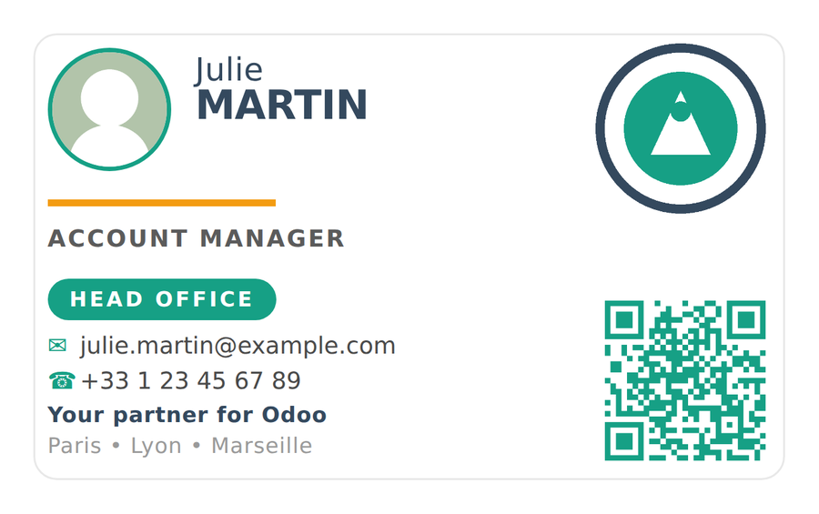

Double-sided employee badges in credit-card format, 86 × 54 mm, printed straight from the employee form.

One agency, one badge.
Create your offices under Employees > Configuration > Badge
Agencies. Each carries a label, a logo and a phone number. Assign one to an employee
and the badge is branded accordingly — no code, no template to edit.
A QR code per employee.
Generated in your accent color. Its content follows this order of priority: an image
supplied by an external platform, then the Badge QR Link field, then the employee
barcode.
Your colors, your signature.
Slogan, tagline, website, back wordmark, fallback email and the four badge colors are set
per company, on the Employee Badge tab of the company form.
Made for printing.
The whole layout sits inside a 5 mm safe area and no solid color reaches the edge,
so the badge stays clean even on a printer without full bleed. A thin rounded frame
doubles as a cutting guide.
qrcode